Camera · Depth · Point Cloud · Unprojected · Tracks
| Frame | fx | fy | cx | cy | Center X | Center Y | Center Z |
|---|---|---|---|---|---|---|---|
| 1 | 365.02 | 363.0 | 259.0 | 147.0 | 0.0 | -0.0 | -0.0 |
| 2 | 371.79 | 370.6 | 259.0 | 147.0 | 0.003 | 0.006 | 0.117 |
| 3 | 373.15 | 379.41 | 259.0 | 147.0 | 0.002 | -0.012 | -0.032 |
| 4 | 360.45 | 357.31 | 259.0 | 147.0 | 0.106 | 0.104 | 1.336 |
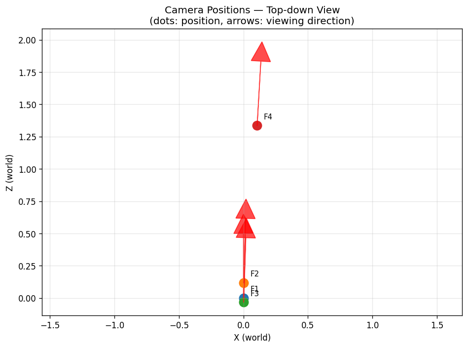
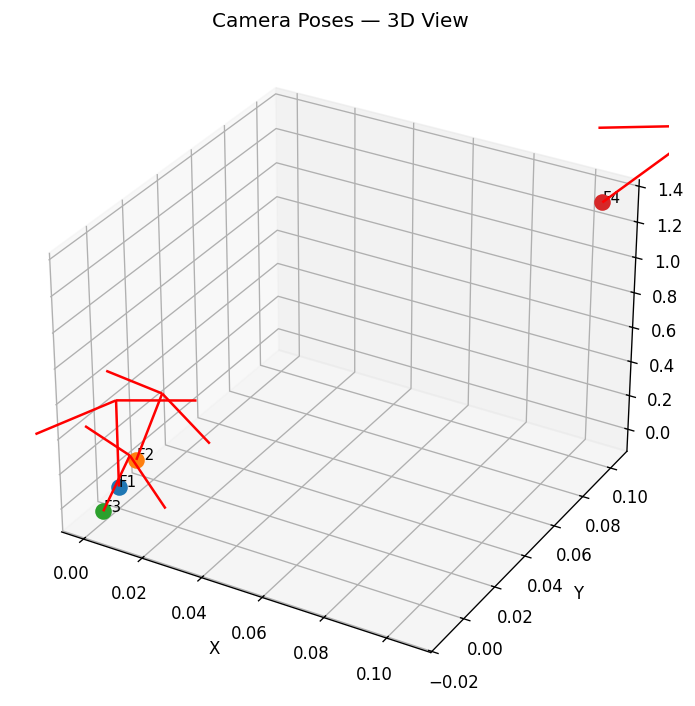
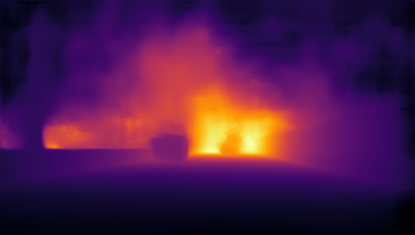
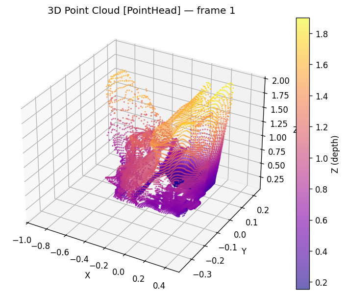
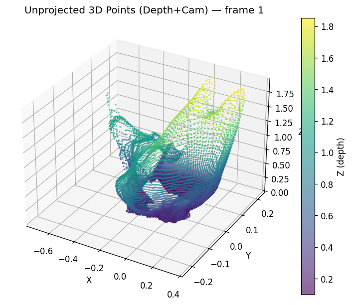
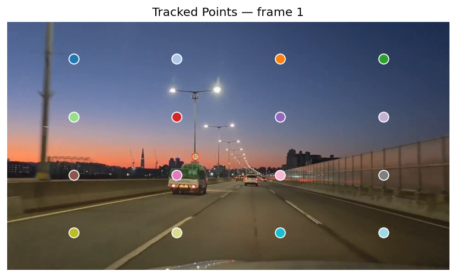
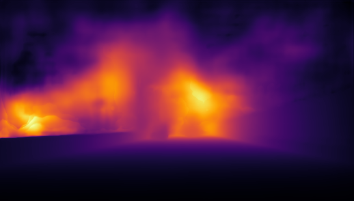
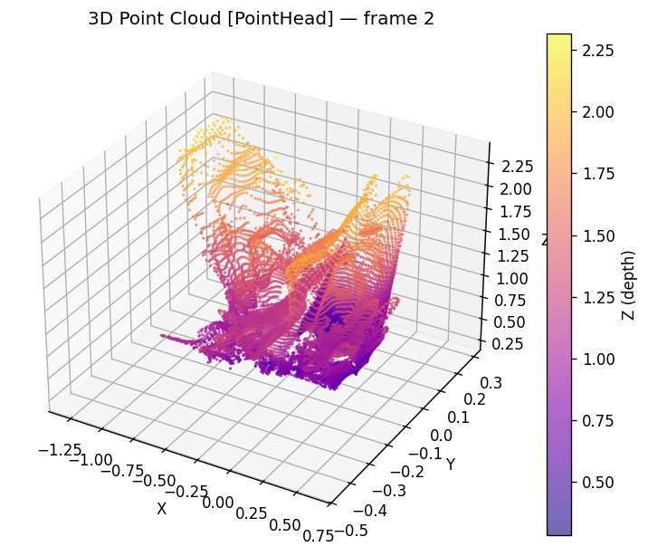
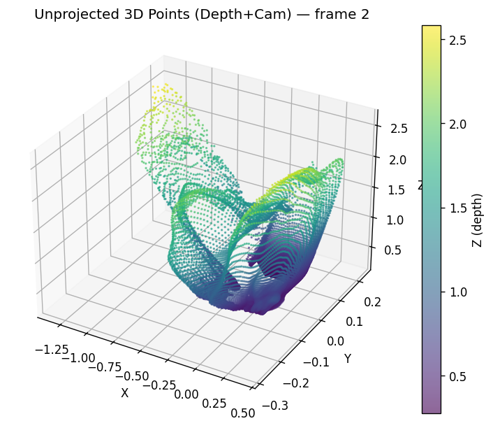
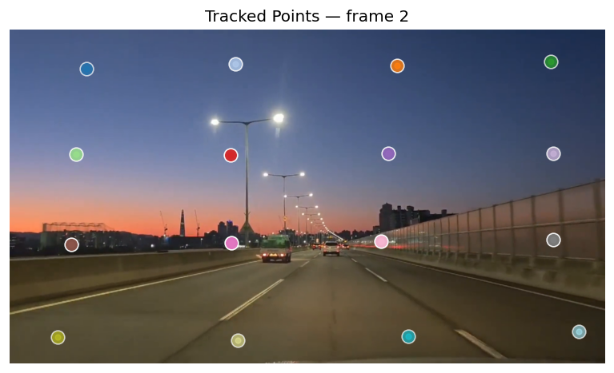
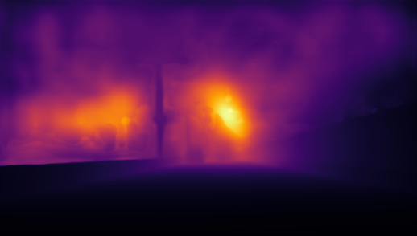
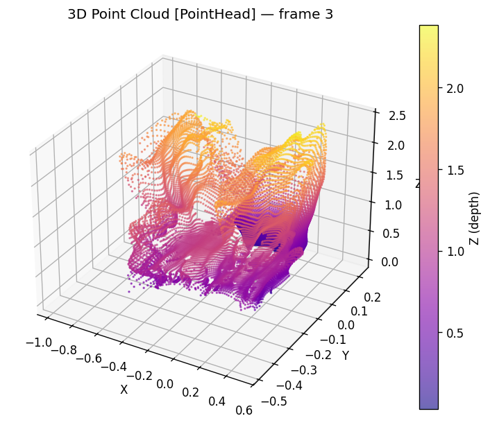
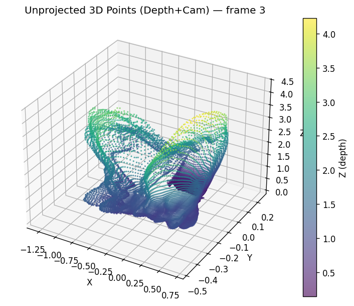
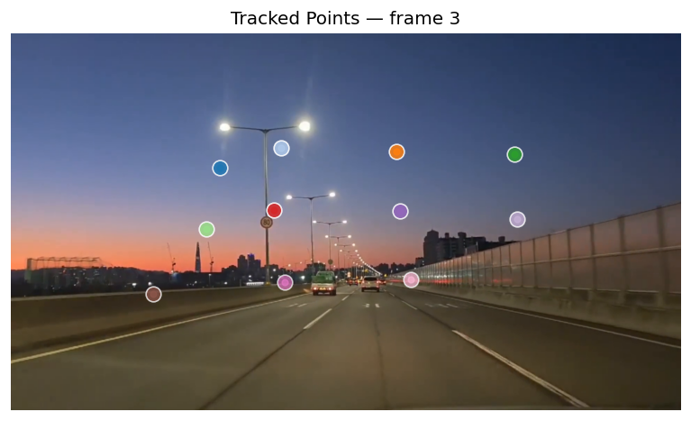
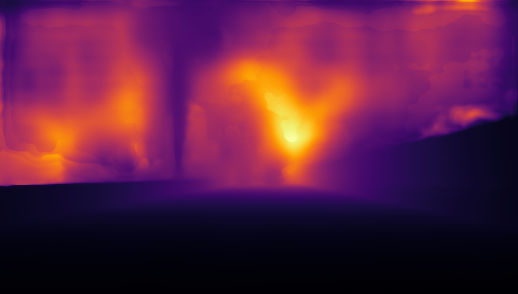
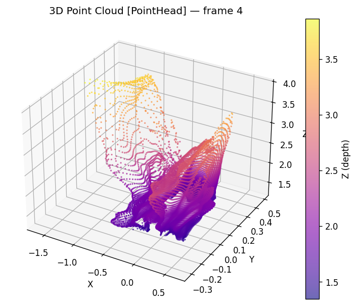
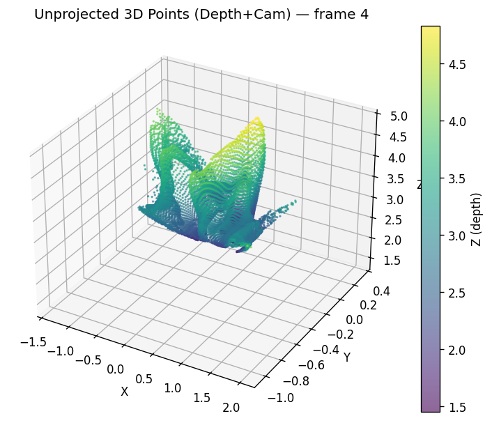
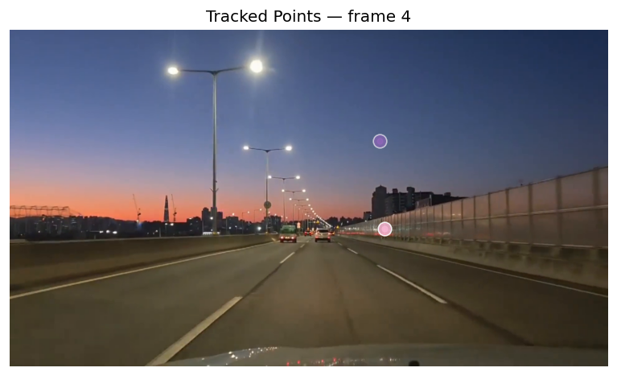
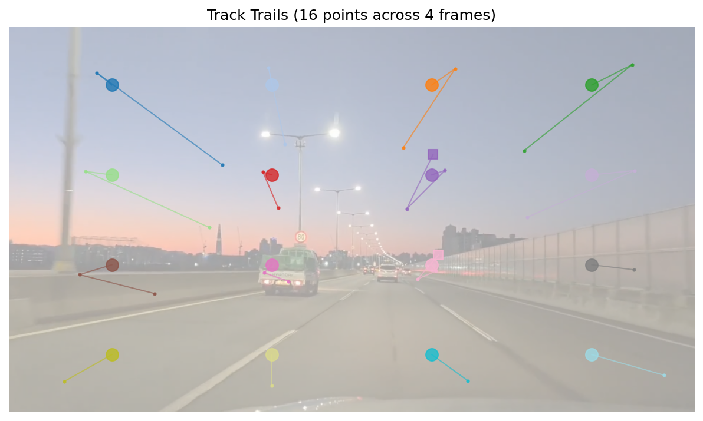